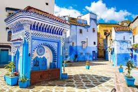

1. Nusa Penida-Indonesia Pulau kecil ini menawarkan pemandangan pantai eksotis dengan tebing terjal dan air laut sebening kristal. Tempat seperti Kelingking Beach dan Angel’s Billabong menjadi favorit wisatawan yang mencari ketenangan dan keindahan alam yang masih alami.
 2. Chefchaouen – Maroko Dikenal sebagai “The Blue Pearl of Morocco,” kota kecil ini dipenuhi bangunan biru yang menciptakan suasana damai. Terletak di pegunungan Rif, Chefchaouen menawarkan pengalaman budaya yang otentik dan kesempatan foto yang Instagramable di setiap sudut.
3. Luang Prabang – Laos Kota yang tenang ini memiliki perpaduan budaya Prancis dan Laos yang unik. Di sini kamu bisa menikmati kehidupan monastik yang damai, mengunjungi kuil Buddha, serta melihat air terjun Kuang Si yang jernih dan menyegarkan.
4. Isle of Skye – Skotlandia Pulau ini menyuguhkan pemandangan alam dramatis seperti The Old Man of Storr dan Fairy Pools. Cocok untuk pencinta alam dan pejalan kaki, Isle of Skye juga kaya akan mitos dan cerita rakyat yang menarik untuk dijelajahi.
5. Togean Islands – Sulawesi Gugusan pulau ini masih sangat alami dan jauh dari keramaian turis. Dengan pantai yang tenang dan terumbu karang yang kaya, Togean cocok untuk kamu yang mencari ketenangan, menyelam, atau sekadar menikmati sunset tanpa gangguan.